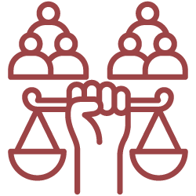
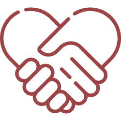
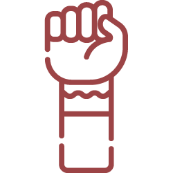

Implicações éticas em saúde
Ao final desta aula, você será capaz de:
- Compreender as implicações éticas envolvidas na atenção à saúde dos povos ciganos no Brasil, considerando aspectos de preconceito, racismo e estigmatização.
- Analisar situações de discriminação e estigma no atendimento à população cigana, identificando suas consequências éticas e sociais.
- Avaliar a importância da humanização e reconhecer os princípios éticos que devem orientar a prática profissional na atenção à saúde dos povos ciganos.
Introdução
Ainda que as condutas profissionais sejam moldadas por contextos históricos e sociais, compreende-se que incorporam conceitos e valores que emergem da prática cotidiana e do contexto em que os profissionais estão inseridos, se deparando frequentemente com desafios diários que levam às reflexões sobre a natureza da ética e sua aplicação diariamente. Essa reflexão contínua é fundamental para garantir o atendimento ético e responsável, especialmente em contextos complexos como o da saúde, que deve ser considerada em seu contexto social e jurídico.
A necessidade de se considerar as implicações éticas em saúde é o passo inicial para garantir o acesso integral dos povos ciganos a esses serviços, sob a ótica da saúde como um direito à cidadania e dignidade, considerando o diálogo e a construção transversal entre os entes públicos, servidores, gestores e os povos ciganos, compreendendo a necessidade do atendimento humanizado, que considere os direitos humanos de forma plural e democrática, bem como as especificidades que envolvem a temática do acesso em saúde para essa população, unindo conceitos como ética, justiça social, direito à dignidade e equidade.
"A equidade vincula-se à necessidade de tratar diferente os desiguais e está diretamente ligada à perspectiva da saúde pública para os ciganos no Brasil."
(SILVA JÚNIOR; TOYANSK, 2020)
Assim, o presente módulo busca evidenciar como as questões éticas impactam as práticas profissionais e, consequentemente, os cuidados de saúde oferecidos às comunidades ciganas, diante das desigualdades historicamente enfrentadas por essa população. O objetivo é apontar caminhos para a construção de um pensamento ético profissional autônomo e crítico, capaz de promover mudanças essenciais para a ampliação do acesso à saúde e para a oferta de atendimentos humanizados, que reconheçam e respeitem as diferenças e especificidades dos povos ciganos.
Cidadania e dignidade: A Luta pela Saúde dos Povos Ciganos no Brasil
Historicamente os povos ciganos estiveram à margem, com dificuldades e barreiras causadas pelo Estado para que conseguissem o acesso integral às políticas públicas que contemplassem a população brasileira. Essa exclusão reflete um padrão estrutural de preconceito e racismo que se perpetua ao longo dos séculos e resulta em desafios para o acesso aos direitos fundamentais.
"A saúde é um dos direitos pétreos garantidos pela Constituição Federal de 1988, devendo chegar a todos os cidadãos brasileiros, independente de etnia, credo ou gênero. Reconhecendo que historicamente as minorias étnicas, entre elas as ciganas, sofreram políticas persecutórias e encontram-se, por isso, em situação de desigualdade social ou exclusão, o Sistema Único de Saúde (SUS) adotou os princípios da universalidade e da equidade."
(SILVA JÚNIOR; TOYANSK, 2020)
O acesso à saúde para os povos ciganos não se resume ao formato individual de consultas e medicamentos, mas envolve a valorização de práticas culturais que vão além da medicina convencional.
Dentro da pluralidade de costumes e tradições, muitas famílias ciganas priorizam cuidados que englobam aspectos da medicina tradicional, desafiando o modelo individualista predominante na medicina, que por vezes não considera as questões populares, coletivas e tradicionais em saúde.
O medo de discriminação e a falta de confiança nas instituições públicas fazem com que muitos ciganos e ciganas evitem buscar atendimento pelo receio de serem estigmatizados ou mal compreendidos, e isso reforça um ciclo de desconfiança que perpetua a desigualdade. Essas barreiras são tanto sociais quanto institucionais, dificultando o acesso a cuidados adequados.
Desde o marco inicial de aproximação dos povos ciganos e do Estado brasileiro, por volta dos anos 2000, as questões que englobam as especificidades em políticas públicas no âmbito da saúde vêm sendo colocadas pelos povos ciganos.
"Na 1ª CONAPIR, 87 propostas trataram de “Saúde”, sendo apenas uma sobre saúde cigana:
(A10) 33. Garantir a presença de ginecologista mulher nas unidades móveis, para que as mulheres ciganas possam realizar seus exames preventivos e de pré-natal sem criar constrangimentos dentro de sua comunidade.
No relatório da 2ª CONAPIR, no tema “saúde”, apenas dois artigos são dedicados exclusivamente aos ciganos:
(B11) 22. Articular a implementação de programas de saúde diferenciados na assistência à etnia cigana pelo SUS, priorizando ações na área de medicina preventiva, segurança alimentar, fitoterapia, e DST/AIDS.
(B12) 45. Buscar mecanismos para garantir o atendimento integral e imediato de saúde dos grupos de ciganos acampados e de passagem, oferecendo saneamento básico atendimento de saúde através de ações emergenciais dos órgãos públicos”.
(MOONEN, p. 18, 2013)
A luta pela cidadania plena e dignidade implica a construção de políticas públicas que respeitem e considerem as reivindicações dos povos ciganos, sendo necessário que o estado adote uma abordagem inclusiva com a participação ativa das comunidades no planejamento e na execução de ações de saúde, assim como urge a necessidade de qualificação de profissionais da área da saúde sobre as questões que envolvem as especificidades dos povos ciganos. É necessário compreender que a cidadania e a dignidade dos povos ciganos devem ser vistas como pilares na construção de um sistema de saúde mais justo e equitativo, considerando que essa luta não é apenas por direitos, mas pelo reconhecimento dos povos ciganos enquanto protagonistas da sua própria história, buscando promover um futuro em que o acesso à saúde reflita sua dignidade e identidade cultural.
A Dualidade: Ética Médica e Ética dos Povos Ciganos em Saúde
A relação entre a ética médica e a ética dos povos ciganos em saúde revela uma complexidade que demanda uma reflexão profunda sobre práticas e valores dentro de cada contexto. A ética médica ocidental, fundada em princípios como a autonomia e a justiça, muitas vezes se baseia em uma abordagem técnica e individualista, esse modelo tende a oferecer cuidados padronizados, priorizando a eficiência e a racionalidade nos processos de diagnóstico e tratamento; contudo, essa lógica pode entrar em conflito com a ética dos povos ciganos, que valoriza a coletividade, a tradição e a ancestralidade em suas práticas de saúde.
"Para os homens e mulheres de etnia cigana é forte a concepção de que se nasce junto e que se permanece assim por toda a sua vida. As famílias, independente das etnias e sua diversidade linguística ou condição financeira, passam pela vida juntas e é nessa condição que se juntam nas festas de comemoração, batizados, enterros, nas viagens para o comércio de mercadorias e nas dificuldades, como o enfrentamento da morte e as doenças. Essa é uma das características mais fortes das comunidades e/ou famílias ciganas em todo o mundo."
(COSTA; ROLIM, p. 33, 2014)
Para reflexão inicial, devemos pensar sobre a ética médica centrada em normas rígidas, que impõe horários de visitação e restrições quanto ao número de acompanhantes nos hospitais, que desconsidera as práticas culturais de grupos específicos moldados na coletividade, como os povos ciganos.
Dentro das etnias ciganas, é comum que toda a família se reúna em frente ao hospital quando um ente querido está doente, ou até mesmo durante o nascimento de uma criança. Essa tradição é uma expressão da coletividade, cuidado e apoio mútuo, que está intrinsecamente ligado à ética dos povos ciganos, considerando que a presença da família é fundamental. Contudo, essa prática cultural muitas vezes se encontra em conflito com as normas do sistema de saúde, pois a presença de um grande número de familiares em frente ao hospital pode ser interpretada como uma violação das regras estabelecidas, levando as instituições a negarem atendimento ou a exercerem resistência diante da chegada das comunidades ciganas; essa dinâmica gera um ciclo de desconfiança e exclusão, perpetuando a marginalização já vivenciada por esses grupos.
"Estar internado é quase um castigo, tanto para o paciente quanto para a família, que a depender da doença, permanece em grupos grandes na porta de fora do hospital até verem seus parentes livres da doença e do hospital. Por vezes pode-se ver de 30 a 10 indivíduos da mesma família na porta de um hospital, esperando por seu ente querido."
(COSTA; ROLIM, p. 34, 2014)
A ética para os povos ciganos se fundamenta em valores que reconhecem a interconexão entre os indivíduos, a cultura, as tradições e a comunidade. A saúde não é vista apenas como a ausência de doenças, mas como um estado de equilíbrio que envolve aspectos físicos, emocionais e coletivos. Para os povos ciganos, as tradições de cura presentes em algumas comunidades, muitas vezes transmitidas oralmente, desempenham um papel central na manutenção da saúde e no enfrentamento de doenças.
Essa dualidade ética aponta para a necessidade urgente de um diálogo intercultural e interdisciplinar que possa encontrar um meio-termo respeitoso e inclusivo.
A ética médica deve se abrir para compreender o valor das práticas culturais dos povos ciganos, reconhecendo que a cura envolve o contexto social e familiar de cada um, considerando a diversidade cultural e buscando um entendimento que vá além da imposição de normas, criando um ambiente mais acolhedor e humano.
A imposição de práticas médicas ocidentais, sem a devida consideração das crenças e valores dos povos ciganos em sua diversidade, pode resultar em resistência e desconfiança, afastando ainda mais as comunidades do sistema de saúde. Assim, para que o atendimento à saúde seja verdadeiramente equitativo e humanizado, é fundamental que haja um espaço de trocas e diálogo entre a ética médica e a ética presente nas famílias ciganas para construir abordagens que integrem os saberes tradicionais com os conhecimentos científicos, construindo um modelo de saúde que respeite a diversidade cultural e promova o bem-estar dos povos ciganos, construindo uma relação de confiança com as comunidades e proporcionando um atendimento que reconheça a autonomia dos povos ciganos, permitindo que suas vozes e vivências sejam ouvidas e consideradas nas decisões sobre seu cuidado para superar as barreiras que ainda hoje existem.
A seguir, o quadro apresenta um comparativo que sintetiza essas perspectivas, destacando seus referenciais, valores centrais, riscos e caminhos possíveis para a conciliação entre ambos os modos de compreender e praticar o cuidado em saúde.
| Aspecto | Ética Médica (modelo dominante) | Ética dos Povos Ciganos |
|---|---|---|
| Referencial | Individual | Coletivo/comunitário |
| Valor central | Autonomia, eficiência, padronização | Tradição, ancestralidade, apoio familiar |
| Prática típica | Regras fixas de visita/acompanhamento | Presença expandida de familiares |
| Risco | Desconsiderar especificidades culturais | Ser lida como “quebra de regras” |
| Desfecho frequente | Negativa/resistência institucional | Desconfiança e afastamento do serviço |
| Caminho de conciliação | Protocolos flexíveis, mediação cultural, comunicação clara | Negociação de fluxos, representantes familiares, corresponsabilidade |
Ética em Saúde: Diálogo entre Profissionais e Comunidades Ciganas
O conceito de ética envolve princípios que guiam o comportamento humano em busca do bem comum, promovendo valores como:

Justiça social
Respeito
DignidadeNo contexto da saúde, isso se traduz na obrigação dos profissionais em oferecer um atendimento humanizado, que reconheça e compreenda as particularidades de cada paciente. Assim, a ética médica deve assegurar que não haja espaço para preconceito ou racismo nos serviços de saúde, como dita a Portaria 1.820, de 13 de agosto de 2009 do Ministério da Saúde , que enfatiza a necessidade de eliminar qualquer forma de preconceito e discriminação no atendimento para garantir o direito pleno ao acesso aos serviços de saúde, com respeito à sua cultura, tradições e identidade.
A humanização do atendimento é fundamental para a construção de uma relação de confiança entre os profissionais de saúde e as comunidades ciganas, no entanto, isso requer um esforço para oferecer um espaço seguro em que os pacientes possam expressar suas necessidades e preocupações.
A abordagem humanizada não se limita ao tratamento das doenças, mas abrange a atenção integral ao indivíduo, considerando seus aspectos sociais e culturais, o contexto em que está inserido.
O mesmo podemos compreender com relação a pesquisas em saúde, pois é essencial garantir que essas comunidades sejam tratadas com respeito e dignidade, assegurando que sua participação seja voluntária e informada. Os pesquisadores devem adotar práticas que evitem a exploração e estigmatização e promovam a justiça social, garantindo que os benefícios das pesquisas retornem à comunidade e que suas vozes sejam integradas e ativas na produção do conhecimento, considerando que estes são os detentores dos saberes tradicionais e devem ser valorizados.
Diante disso, a ética em saúde demanda um compromisso contínuo para garantir que as interações entre os profissionais e os povos ciganos sejam guiadas pelo respeito e equidade para a promoção de um diálogo aberto e sensível, fundamental para construir um sistema de saúde que verdadeiramente acolha a diversidade e promova a dignidade e cidadania de todos. Assim, a humanização do atendimento, aliada a uma postura ética inclusiva, contribui para a superação das barreiras existentes, transformando o acesso à saúde em uma realidade mais justa e alcançável para os povos ciganos no Brasil.